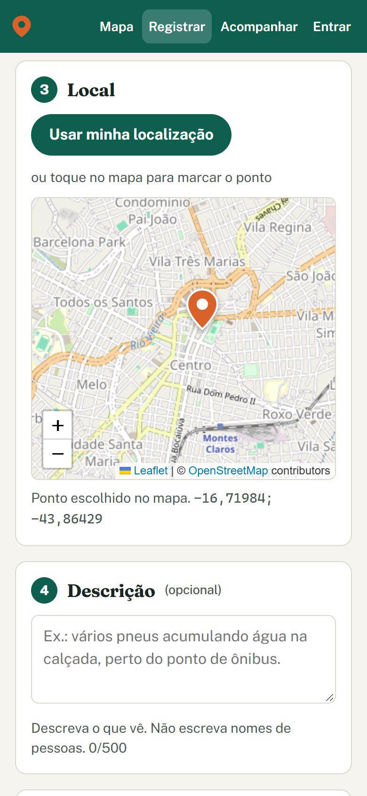
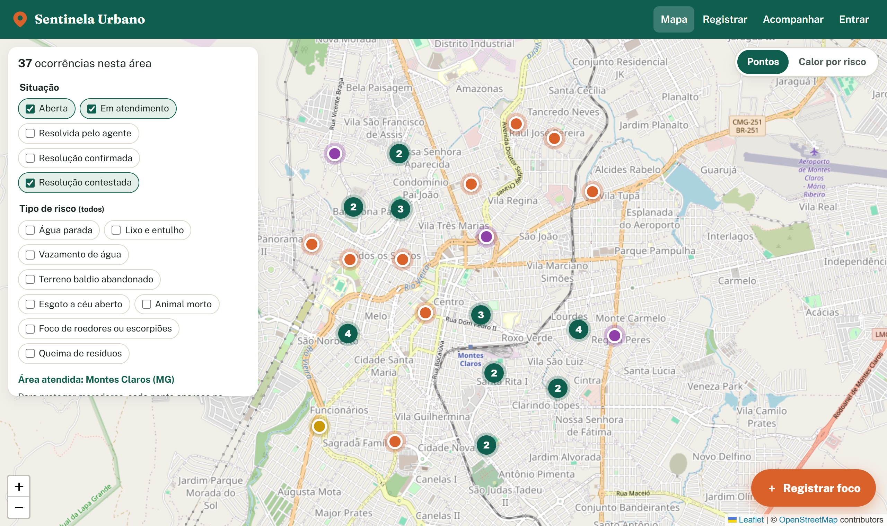
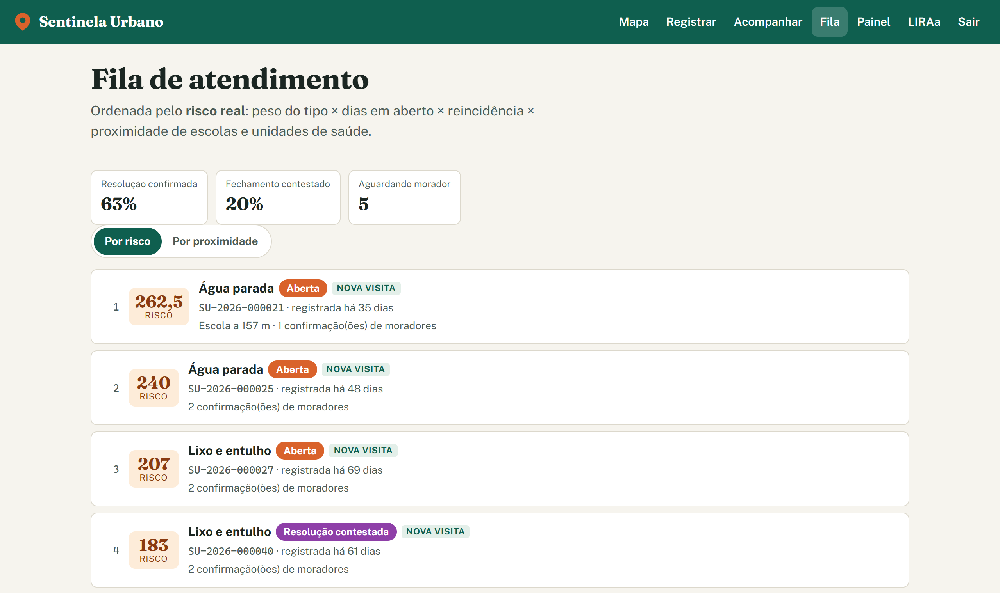
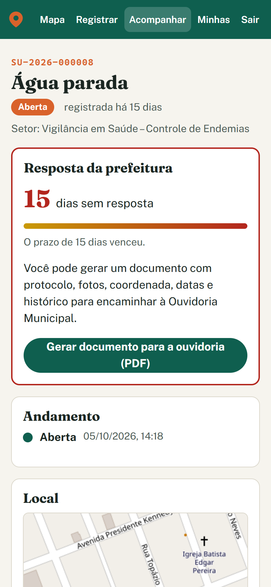
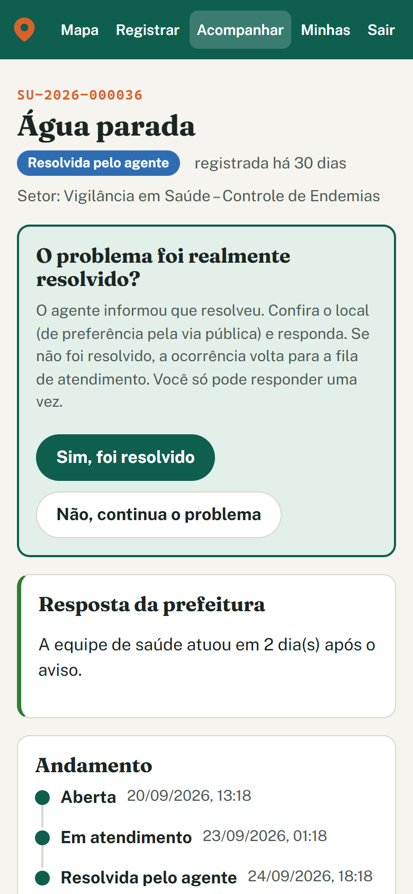
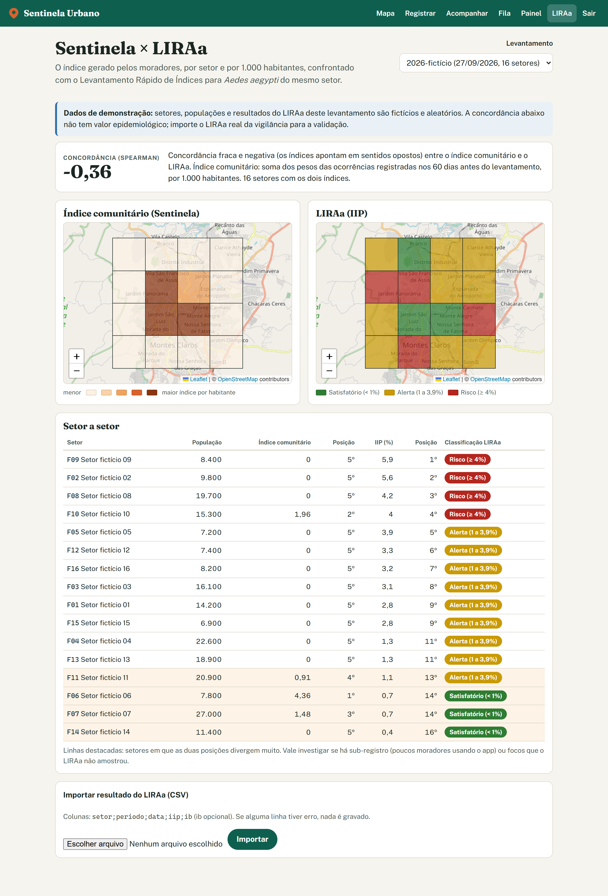

Sentinela Urbano: vigilância comunitária georreferenciada de risco de arbovirose com priorização por índice de risco e validação frente ao LIRAa
Projeto Integrador · Engenharia da Computação
Curso de Engenharia da Computação · Montes Claros (MG) · 2026
Resumo
As arboviroses transmitidas pelo Aedes aegypti (dengue, zika e chikungunya) dependem de condições ambientais do próprio bairro, e o morador costuma ser o primeiro a perceber os focos. Essa informação, porém, raramente chega à vigilância municipal de forma utilizável. Este trabalho apresenta o Sentinela Urbano, uma aplicação web progressiva (PWA) de vigilância comunitária, desenvolvida para Montes Claros (MG), em que moradores registram focos de risco com foto e localização. Agentes de saúde atendem uma fila priorizada por um índice de risco que combina peso do tipo, tempo em aberto, reincidência no mesmo ponto e proximidade de escolas e unidades de saúde. A prefeitura é notificada automaticamente e, quando não responde, o silêncio torna-se público e documentável para a ouvidoria. O sistema também agrega o índice por setor, normalizado pela população, e o compara com o Levantamento Rápido de Índices para Aedes aegypti (LIRAa) por meio da correlação de postos de Spearman. A solução foi construída em três fases, com React, FastAPI e PostgreSQL/PostGIS sobre dados do OpenStreetMap, e verificada por 164 testes automatizados. Os resultados mostram a viabilidade técnica do ciclo completo, do registro à confirmação da resolução pelo morador. A validação epidemiológica depende de dados reais da vigilância municipal e de um piloto em campo.
Palavras-chave: arboviroses; vigilância participativa; geoprocessamento; Aedes aegypti; saúde digital.
Abstract
Arboviral diseases transmitted by Aedes aegypti (dengue, Zika and chikungunya) depend on local environmental conditions, and residents are often the first to notice breeding sites, yet this information rarely reaches municipal surveillance in a usable form. This paper presents Sentinela Urbano, a community surveillance progressive web application built for Montes Claros, Brazil, in which residents report risk sites with a photo and location. Health agents work through a queue prioritized by a risk index that combines type weight, days open, recurrence at the same spot and proximity to schools and health units. The municipality is notified automatically and, when it does not respond, its silence becomes public and can be documented for the ombudsman. The system aggregates the index by sector, normalized by population, and compares it with the official LIRAa survey using Spearman's rank correlation. It was built in three phases with React, FastAPI and PostgreSQL/PostGIS on OpenStreetMap data and verified by 164 automated tests. Results show the technical feasibility of the full cycle; epidemiological validation requires real municipal data and a field pilot.
Keywords: arboviruses; participatory surveillance; geoprocessing; Aedes aegypti; digital health.
Em 2024, o Brasil registrou cerca de 6,6 milhões de casos prováveis de dengue e 6.022 mortes, o pior resultado da série histórica (PODER360, [2025?]). Em 2026, os números caíram de forma expressiva: até 11 de abril foram 227,5 mil casos prováveis, contra 916,4 mil no mesmo período do ano anterior (AGÊNCIA BRASIL, 2026). Essa queda, contudo, é atribuída a condições climáticas favoráveis, à vacinação de grupos específicos e a campanhas pontuais, e não a uma vigilância contínua capaz de agir antes do adoecimento.
O problema que motiva este trabalho não é a falta de informação, mas a sua dispersão. Quem enxerga primeiro o pneu com água, o terreno com entulho ou o esgoto na rua é o morador. Os canais existentes (telefone da ouvidoria, atendimento presencial ou visita eventual do agente) exigem contato em horário comercial e não registram foto, coordenada nem protocolo. Sem retorno, o morador desiste de avisar. Do outro lado, o agente de combate a endemias faz varredura por rotina, quarteirão por quarteirão, sem saber de antemão onde estão os focos.
Alinhado ao Objetivo de Desenvolvimento Sustentável 3, meta 3.3, que trata do combate às doenças tropicais negligenciadas (NAÇÕES UNIDAS BRASIL, 2026), o objetivo geral deste trabalho é desenvolver uma plataforma de vigilância comunitária de risco de arbovirose que transforme a observação do morador em dado georreferenciado, priorizado e acompanhável. Os objetivos específicos são:
O artigo está organizado da seguinte forma: a Seção 2 apresenta o referencial teórico; a Seção 3, a metodologia e as decisões de projeto; a Seção 4, os resultados obtidos; a Seção 5 discute contribuições e limitações; e a Seção 6 traz as considerações finais e os trabalhos futuros.
Dengue, zika e chikungunya são transmitidas pelo mosquito Aedes aegypti, que se reproduz em recipientes com água parada em ambiente urbano: pneus, caixas d'água destampadas, calhas, vasos e lixo acumulado. Por isso, as diretrizes nacionais enfatizam a eliminação de criadouros e a mobilização da população como componentes centrais do controle vetorial (BRASIL, 2009). A eficácia dessas ações depende de localizar os focos a tempo, antes que o criadouro produza sucessivas gerações do vetor.
O LIRAa é o levantamento amostral do Ministério da Saúde que estima a infestação do vetor por estratos do município. O principal indicador é o Índice de Infestação Predial (IIP), percentual de imóveis com larvas. A classificação adotada considera o IIP inferior a 1% como satisfatório, entre 1% e 3,9% como alerta e igual ou superior a 4% como risco. O levantamento também calcula o Índice de Breteau, número de recipientes positivos por 100 imóveis (BRASIL, 2013). O LIRAa é, portanto, a referência oficial adequada para avaliar se um índice gerado pela comunidade aponta para as mesmas áreas críticas.
Goodchild (2007) descreve os cidadãos como "sensores" capazes de produzir informação geográfica voluntária em escala e com rapidez inalcançáveis por levantamentos formais. O próprio OpenStreetMap, base cartográfica deste trabalho, é resultado desse modelo (OPENSTREETMAP CONTRIBUTORS, 2026). Essa abordagem tem limitações conhecidas que precisam ser tratadas no desenho do sistema: registros falsos ou motivados por conflitos, e viés de cobertura, já que regiões com mais acesso a smartphones tendem a gerar mais dados.
A Lei Geral de Proteção de Dados Pessoais (BRASIL, 2018) impõe, entre outros, os princípios da finalidade e da necessidade, isto é, a coleta do mínimo necessário. No contexto de denúncias ambientais há ainda um risco específico: a localização exata e a fotografia de um imóvel podem identificar pessoas e expor moradores a conflitos de vizinhança. O tratamento da localização, portanto, é um requisito de projeto, e não um detalhe de implementação.
Os requisitos partiram de três documentos produzidos pela equipe: o projeto original, o product backlog com 14 histórias de usuário e um documento de melhorias. Este último substituiu o mapa de densidade por um índice de risco, incluiu a identificação de pontos crônicos, a confirmação pelo morador, a resposta à ausência da prefeitura e a comparação com o LIRAa, e acrescentou uma análise de limitações e riscos. Foram definidos três perfis de usuário (morador, agente de saúde e gestor) e oito tipos de risco: água parada, lixo e entulho, vazamento de água, terreno baldio abandonado, esgoto a céu aberto, animal morto, foco de roedores ou escorpiões e queima de resíduos.
O desenvolvimento foi incremental, em três fases, cada uma encerrada com demonstração, verificação e aprovação antes da seguinte: (1) estrutura, modelo de dados, registro e mapa público; (2) fila por risco, pontos crônicos, encerramento com foto, confirmação do morador e mapa de calor; (3) prazos, documento para a ouvidoria, setores, comparação com o LIRAa e painel de indicadores. O piloto foi delimitado ao município de Montes Claros (MG). O desenvolvimento contou com o apoio de um assistente de programação baseado em inteligência artificial, sob direção e revisão da equipe.
A solução adota uma arquitetura em três camadas, sem dependência de serviços pagos (Figura 1). O cliente é uma aplicação web progressiva em React e TypeScript, instalável no celular, com acesso à câmera e ao GPS, e mapa interativo com a biblioteca Leaflet sobre o OpenStreetMap (LEAFLET, 2026). O servidor é uma API REST em Python com FastAPI, responsável pelas regras de negócio, pela autenticação, pelo envio de e-mails e pela geração de documentos. O banco de dados é o PostgreSQL com a extensão PostGIS (POSTGIS PROJECT, 2026), que armazena os pontos no sistema de referência WGS 84 (SRID 4326) e calcula distâncias em metros. Todo o ambiente é executado em contêineres Docker.
Fonte: elaborado pelos autores (2026).
O modelo de dados é versionado por migrações e é composto principalmente por: usuários; tipos de ocorrência com seus pesos; coeficientes do índice; ocorrências (com o ponto em geography), fotos e histórico de situações; confirmações de outros moradores; notificações por e-mail; pontos sensíveis; setores com população; e resultados do LIRAa. As situações de uma ocorrência seguem o fluxo aberta → em atendimento → resolvida pelo agente → confirmada ou contestada; a contestada volta para a fila do agente.
Em vez da densidade de registros, que confunde quantidade com risco, cada ocorrência recebe o índice da Equação 1:
risco = pesotipo × diasaberto × fatorreincidência × fatorproximidade(1)
em que diasaberto é o número de dias desde a abertura (mínimo 1); fatorreincidência = 1 + 0,5 × n, sendo n o número de ocorrências já resolvidas a até 30 m; e fatorproximidade vale 1,5 quando há escola, creche ou unidade de saúde a até 200 m, e 1 nos demais casos. Os pesos iniciais estão na Tabela 1. Todos os coeficientes ficam em tabela no banco e podem ser ajustados sem alterar o código.
Tabela 1 – Tipos de risco, pesos iniciais e setor de destino
| Tipo de risco | Peso | Setor de destino |
|---|---|---|
| Água parada | 5 | Vigilância em Saúde – Controle de Endemias |
| Lixo e entulho | 3 | Limpeza Urbana |
| Vazamento de água | 3 | Saneamento – Abastecimento de Água |
| Terreno baldio abandonado | 2 | Fiscalização de Posturas |
| Esgoto a céu aberto | 2 | Saneamento – Esgotamento Sanitário |
| Animal morto; roedores ou escorpiões | 1 | Vigilância em Saúde – Zoonoses |
| Queima de resíduos | 1 | Meio Ambiente |
Fonte: elaborado pelos autores (2026). Valores iniciais, a calibrar com a vigilância municipal.
O índice é calculado pelo banco de dados no momento da consulta, por meio de uma view SQL, e nunca é armazenado, pois cresce a cada dia em que a ocorrência permanece aberta. Os pontos sensíveis (escolas, creches, hospitais, clínicas e demais estabelecimentos de saúde) são importados do OpenStreetMap por meio da API Overpass, restrita ao contorno oficial do município, por um comando que pode ser agendado. O serviço externo nunca é consultado durante o atendimento de requisições.
Uma nova ocorrência a até 30 m de outra já resolvida é marcada como ponto crônico. A partir de três reincidências, o sistema recomenda notificar o proprietário em vez de realizar nova visita. Para mitigar denúncias falsas, a prioridade de uma ocorrência só ultrapassa um teto configurável depois que outro morador, com conta, confirma tê-la visto ("eu também vi"). Cada pessoa confirma uma única vez, e o autor não pode confirmar o próprio registro. Como quase todas as ocorrências começam sem confirmação, a fila desempata pelo risco sem teto: as mais graves aparecem primeiro, sem ultrapassar nenhuma ocorrência confirmada. O agente só encerra uma ocorrência anexando uma foto do local. Em seguida, quem registrou recebe uma única pergunta, "o problema foi realmente resolvido?", e a resposta negativa devolve a ocorrência à fila.
O mapa público nunca exibe a coordenada exata. Cada ponto é deslocado para o centro de uma célula de uma grade fixa de aproximadamente 100 m. Optou-se por uma grade determinística, e não por ruído aleatório, porque o ruído permitiria tirar a média de vários registros do mesmo ponto e se aproximar da posição real. Pelo mesmo motivo, os filtros espaciais da consulta pública operam sobre a coordenada já deslocada. O mapa público também não exibe fotos, descrições nem autores. As fotos têm os metadados (EXIF), inclusive a posição do aparelho, removidos no envio. O registro pode ser feito sem conta: o morador recebe um protocolo e um link privado de acompanhamento, cujo código é transmitido no fragmento da URL e armazenado apenas como hash.
O sistema conta os dias entre o aviso por e-mail à prefeitura e a primeira ação de um agente ou gestor. Essa contagem é exibida publicamente em cada ocorrência. Vencido o prazo configurado (15 dias), quem registrou pode gerar um documento em PDF com protocolo, fotos, coordenada, datas e histórico, para encaminhar à Ouvidoria Municipal. Assim, o sistema mantém sua função mesmo sem integração formal com o município.
Os setores são cadastrados como polígonos com população, e as ocorrências são associadas a eles espacialmente no momento da consulta. Para evitar o viés de cobertura descrito na Seção 2.3, todo índice por setor é expresso por 1.000 habitantes. Para a comparação com o LIRAa, o índice comunitário de um setor é a soma dos pesos dos tipos das ocorrências registradas nos 60 dias anteriores à data do levantamento, por 1.000 habitantes. A concordância entre esse índice e o IIP é medida pela correlação de postos de Spearman (SPEARMAN, 1904), conforme a Equação 2, em que di é a diferença entre as posições do setor i nos dois índices e n é o número de setores. Na implementação, a correlação é calculada como a correlação de Pearson sobre postos médios, o que trata corretamente os empates.
ρ = 1 − (6 Σ di2) / (n (n2 − 1))(2)
Os resultados do LIRAa são importados por planilha (CSV). A importação segue a regra "tudo ou nada": um único erro, ou um setor não cadastrado, recusa o arquivo inteiro e informa as linhas com problema.
A verificação combinou testes automatizados de unidade e de integração, executados contra o PostgreSQL/PostGIS real, com a execução manual do fluxo completo em ambiente de demonstração. Esse ambiente tem 60 ocorrências fictícias, 16 setores fictícios e um ciclo fictício do LIRAa, todos identificados como tais na interface.
O formulário de registro (Figura 2) permite fotografar o local, obter a posição pelo GPS ou marcá-la tocando no mapa, escolher o tipo de risco (com o setor de destino exibido antes do envio) e, opcionalmente, identificar-se. Pontos fora do município são recusados. Ao final, o morador recebe o protocolo e o link de acompanhamento, e a prefeitura, um e-mail com protocolo, tipo, coordenada e foto anexada. O mapa público agrupa os pontos próximos e permite filtrar por tipo e situação.


Fonte: elaborado pelos autores (2026), com base cartográfica © OpenStreetMap contributors.
A fila de atendimento (Figura 3) apresenta as ocorrências ativas em ordem decrescente de risco e explica cada posição: ponto sensível próximo e distância, número de reincidências e confirmações de moradores. A página de detalhe decompõe o cálculo, por exemplo "3 × 6 dias × 2,5 × 1 = 45" para um ponto com três resoluções anteriores, e exibe a recomendação "notificar proprietário". A fila também pode ser ordenada pela proximidade do agente. No mapa, a camada de calor soma o risco das ocorrências ativas por célula da grade de privacidade, em vez de contar registros. Na primeira importação, foram obtidos 148 pontos sensíveis de Montes Claros.

Fonte: elaborado pelos autores (2026), com dados de demonstração.
Cada ocorrência exibe publicamente quantos dias está sem resposta. Na página de acompanhamento de quem registrou (Figura 4), uma barra mostra o avanço em direção ao prazo. Vencido o prazo, é liberado o botão para gerar o documento da ouvidoria, que reúne os dados da ocorrência, as fotos, o histórico e um texto de solicitação pronto para assinatura. No ambiente de demonstração, cujas ocorrências fictícias foram distribuídas ao longo de dois meses, a maior parte das ocorrências abertas já havia ultrapassado o prazo de 15 dias, o que ilustra como o acúmulo de silêncio se torna visível.


Fonte: elaborado pelos autores (2026).
O painel do gestor apresenta, para o período escolhido: ocorrências registradas, por tipo e por situação; quantidade além do prazo; mediana e média do tempo até a primeira resposta e até a resolução; taxas de resolução confirmada e de fechamento contestado; e o risco por 1.000 habitantes de cada setor, em mapa e tabela exportável. A tela de comparação (Figura 5) exibe lado a lado o índice comunitário e o IIP de cada setor, as posições nos dois rankings, a correlação de Spearman com interpretação textual e o destaque dos setores em que as posições divergem muito.

Fonte: elaborado pelos autores (2026), com setores e LIRAa fictícios.
Com os dados fictícios e aleatórios de demonstração, a correlação obtida foi ρ = −0,36. Esse valor não constitui resultado epidemiológico: ele apenas demonstra que o cálculo e a interpretação funcionam. A medida passa a ter significado quando aplicada aos setores e aos levantamentos reais da vigilância municipal.
O sistema conta com 164 testes automatizados, distribuídos conforme a Tabela 2. Todos foram executados com sucesso no ambiente com PostgreSQL/PostGIS. O fluxo completo também foi verificado manualmente: registro, aviso por e-mail, atendimento, encerramento com foto, pergunta ao morador, contestação e retorno à fila.
Tabela 2 – Testes automatizados por área
| Área verificada | Testes |
|---|---|
| Registro, permissões, acompanhamento e notificação (API) | 24 |
| Ofuscação da localização no mapa público | 16 |
| Remoção de metadados e validação de fotos | 9 |
| Fórmula de risco, coeficientes e detecção de ponto crônico | 19 |
| Fila, encerramento, confirmação do morador, "eu também vi", calor e indicadores | 19 |
| Fluxo de situações e importação de pontos sensíveis | 18 |
| Prazos, Spearman, importação de LIRAa e setores (unidade) | 25 |
| Contador público, documento da ouvidoria, setores e LIRAa (integração) | 10 |
| Aplicativo: validação do formulário, mapa, calor e escalas de cor | 24 |
| Total | 164 |
Fonte: elaborado pelos autores (2026).
A verificação também revelou defeitos que foram corrigidos durante o desenvolvimento. Entre eles: a validação de e-mail impedia o login dos usuários de teste; uma falha momentânea de conexão encerrava a sessão do usuário, o que afetaria quem está sem sinal no celular; abrir um marcador deslocava o mapa e fechava o próprio popup; e, sem o desempate pelo risco sem teto, a fila voltava a ser ordenada por data.
Em relação a canais tradicionais e a plataformas genéricas de denúncia urbana, a principal contribuição do Sentinela Urbano é tratar o registro como dado de vigilância, e não apenas como reclamação. Isso aparece em três pontos: a prioridade passa a refletir risco real (tipo, tempo, reincidência e vulnerabilidade do entorno); o ciclo só se fecha com a confirmação de quem registrou, o que reduz encerramentos administrativos sem ação efetiva; e a ausência de resposta do poder público deixa de ser invisível. Como a solução funciona a partir do primeiro dia sem contrato ou integração com o município, ela responde à principal fragilidade identificada no projeto original: o risco de o sistema se reduzir a um repositório de fotos.
As limitações e os riscos levantados pela equipe foram tratados no próprio desenho do sistema. O registro de propriedade alheia é mitigado pela orientação de fotografar da via pública e pela ocultação da localização exata. A denúncia falsa é mitigada pelo teto de prioridade até a confirmação por outro morador. O viés de quem denuncia é mitigado pela normalização por população. Ainda assim, persistem limitações:
Este trabalho apresentou o Sentinela Urbano, uma plataforma de vigilância comunitária de risco de arbovirose para Montes Claros (MG), desenvolvida em três fases e verificada por 164 testes automatizados. Os objetivos propostos foram atendidos no plano técnico: registro georreferenciado em menos de um minuto, fila priorizada por índice de risco, confirmação da resolução pelo morador, exposição pública da ausência de resposta com documento para a ouvidoria, e comparação com o LIRAa normalizada pela população.
Como trabalhos futuros, propõem-se duas etapas. A primeira amplia o sistema com os itens restantes do backlog: registro sem conexão, sugestão de rota de visita, alerta de acúmulo de registros por área, orientações de prevenção e aviso por aplicativos de mensagem. A segunda é o piloto em campo: publicação do sistema, uso de servidor de mapas próprio, importação dos setores e dos levantamentos reais do LIRAa, revisão do termo de uso com o município e operação em área delimitada, com divulgação junto à escola, à unidade básica de saúde e à associação de moradores. Será a comparação com o LIRAa real, no piloto, que permitirá afirmar se a observação organizada do morador antecipa e orienta a ação da vigilância.
AGÊNCIA BRASIL. Casos de dengue no Brasil caem 75% em 2026. Brasília, 15 abr. 2026. Dados do Ministério da Saúde.
BRASIL. Lei nº 13.709, de 14 de agosto de 2018. Lei Geral de Proteção de Dados Pessoais (LGPD). Diário Oficial da União, Brasília, DF, 15 ago. 2018.
BRASIL. Ministério da Saúde. Diretrizes nacionais para prevenção e controle de epidemias de dengue. Brasília: Ministério da Saúde, 2009.
BRASIL. Ministério da Saúde. Levantamento Rápido de Índices para Aedes aegypti (LIRAa) para vigilância entomológica do Aedes aegypti no Brasil: metodologia para avaliação dos índices de Breteau e Predial e tipo de recipientes. Brasília: Ministério da Saúde, 2013.
GOODCHILD, M. F. Citizens as sensors: the world of volunteered geography. GeoJournal, v. 69, n. 4, p. 211-221, 2007.
LEAFLET. Leaflet: an open-source JavaScript library for interactive maps. Disponível em: https://leafletjs.com. Acesso em: 20 out. 2026.
NAÇÕES UNIDAS BRASIL. Objetivo de Desenvolvimento Sustentável 3: saúde e bem-estar. Disponível em: https://brasil.un.org/pt-br/sdgs/3. Acesso em: 20 out. 2026.
OPENSTREETMAP CONTRIBUTORS. OpenStreetMap. Disponível em: https://www.openstreetmap.org. Acesso em: 20 out. 2026.
PODER360. Dengue bate recorde em 2024 com 6,6 mi de casos e 6.022 mortes. [2025?]. Dados do Ministério da Saúde.
POSTGIS PROJECT. PostGIS documentation. Disponível em: https://postgis.net/documentation/. Acesso em: 20 out. 2026.
SPEARMAN, C. The proof and measurement of association between two things. The American Journal of Psychology, v. 15, n. 1, p. 72-101, 1904.